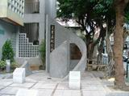

呂清夫 撰文

沙漠需要綠洲，在滾滾紅塵的都市，更需要綠地，需要都市之肺。台灣地狹人稠，難以建立大型公園，台北七號、十四、十五號公園都是費了九牛二虎之力，甚至鬧出人命，才建立起來。其他只好求諸所謂河濱公園，其實這種河濱人煙稀少，利用價值不大，只能作為施政報告上的數字遊戲，說我們每人擁有的綠地並不少云云，其實那不過是一種阿Q公園，喊爽而已。我們必須承認台灣公園綠地嚴重缺少，才能設法改進，如果陷入數字迷思，則將永不長進。其實台灣很多事往往能化不可能為可能，最近看到一個「王貫英紀念園」即為一個實例。它座落在古亭圖書館的側面，面積雖小，但是小而美，小到可以說只有兩間教室那麼大，但是有座椅、有水池、有老樹、有紀念碑、晚上還有成排的矮燈亮起，氣氛極好，夜間靠圖書館的外牆上面還有幾盞優美的壁燈，照亮地上的設施。我每天從那兒經過，日夜都可以看到有人在樂在其中，有學生來此看書，有父子在此倘佯，有情人來此約會，有行人在此歇腳…….。由於它位居馬路的轉角，所以大家都很容易看到它，利用頻率也相對提高。反之，看那河濱公園，大則大矣，對民眾來說有點天涯海角，假日還有一點人，平常則是人跡罕至，花了龐大的維持費，換來一點點效益，實在不值得。當初興建「王貫英紀念園」的時候，大家都行不得也，本以為又在屢建屢拆，挖挖補捕，煩死人了。因為古亭圖書館的圍牆過去一直拆來拆去，但是改來改去越改越醜，館前的樹木也都被砍光了。不過這次「紀念園」的事情並不一樣，主其事者也未必相同，還有文建會介入。本以為圖書館的邊側能幹嘛呢，還不是擴建庫房之類，只管館內方便，不管館外觀瞻。但沒想到，過沒幾天，在這個圖書館側面居然硬是擠出了一個迷你公園，原來這裡本有一道圍牆，說是圍牆也幾乎貼緊了建物，牆內如有空地也是「一線天」，牆外亦然，沒有空地，只剩四棵「劫後餘生」的榕樹差堪容身。於是當這一堵「貼身圍牆」被拆掉之後，兩個「一線天」的狹長空地就合而為一，成為長方形的迷你公園。這真是值得其他台北街頭如法泡製，因為在人口稠密的城市，如果沒有空地的緩衝空間，生活在城市便要一天到晚都在趕路，毫無喘一口氣的可能。其實在公共建築旁邊要擠出類似的空間、或稍大的空間並不難，端看大家要不要做，但是民眾可能受惠無窮，所謂生活品質，不是弄幾個文藝季大拜拜就夠了，街頭巷尾應該多一些幽雅的歇腳空間，那才是行人之福，都市之美。王貫英是個類似武訓般的傳奇人物，雖然是個拾荒者，但以其辛苦積蓄的血汗錢，捐給圖書館購置圖書，義行可風，報章早有報導，但是建個「紀念園」來加以表彰在過去還是少見，這種表彰方式在台北來說也是一種進步。